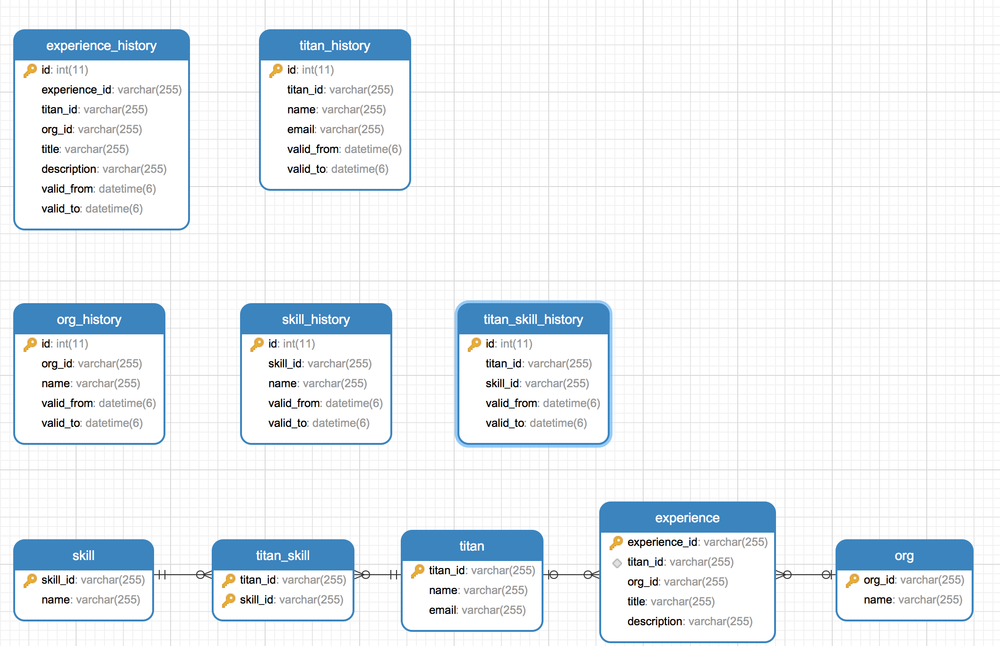

关系型数据库数据历史管理
设计
- 主表
- 使用uuid作为业务主键使用；例如titan表使用命名为titan_id的uuid作为主键
- 可以直接对数据进行常规的select/insert/update/delete操作
- 历史表
- 历史表除了有主表的所有字段以外，使用自增id作为主键
- 增加valid_from、valid_to来记录当前数据的有效时间
- 当主表数据发生insert，往历史表写入当前新增纪录，valid_from=now()，valid_to=9999-12-31
- 当主表数据发生update，往历史表写入当前更新后纪录，valid_from=now()，valid_to=9999-12-31，同时把历史表中valid_to=9999-12-31的记录设置为valid_to=now()
- 当主表数据发生delete，把历史表中valid_to=9999-12-31的记录设置为valid_to=now()
- 保存多对多的关系的中间表，同样有历史表
案例
数据表
- 
- titan
- experience
- experience_id
- titan_id
- org_id
- title
- description
- org
- skill
- titan_skill
- titan_history
- id
- titan_id
- name
- email
- valid_from
- valid_to
- experience_history
- id
- experience_id
- titan_id
- org_id
- title
- description
- valid_from
- valid_to
- org_history
- id
- org_id
- name
- valid_from
- valid_to
- skill
- id
- skill_id
- name
- valid_from
- valid_to
- titan_skill_history
- id
- titan_id
- skill_id
- valid_from
- valid_to
(TBD) 模拟数据变化的过程
(TBD) 与workflow结合
问题
- 业务主键的命名方式
- 主表为id，历史表为titan_id
- 主表为id，历史表也为id
- 主表为titan_id，历史表为titan_id
- 历史表是否还需要自增主键
关键词
- slowly changing dimensions
- data change history
- mysql historical data
- revision
参考